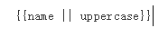

过滤器(filter)
- 用来格式化需要显示给用户的数据。
- 有内置过滤器和自定义过滤器
使用表达式：

使用$filter来调用过滤器：
app.controller('DemoController', ['$scope', '$filter', function($scope, $filter) { $scope.name = $filter('lowercase')('Ari'); }])
内置过滤器
currency, date, json, lowercase, number, orderBy
自定义过滤器
angular.module('myApp.filters', [])
.filter('capitalize', function() {
return function(input) {
if (input){
return input[0].toUpperCase() + input.slice(1);
}
}
});
{{ 'ginger loves dog treats' | lowercase | capitalize }}
// Ginger loves dog treats